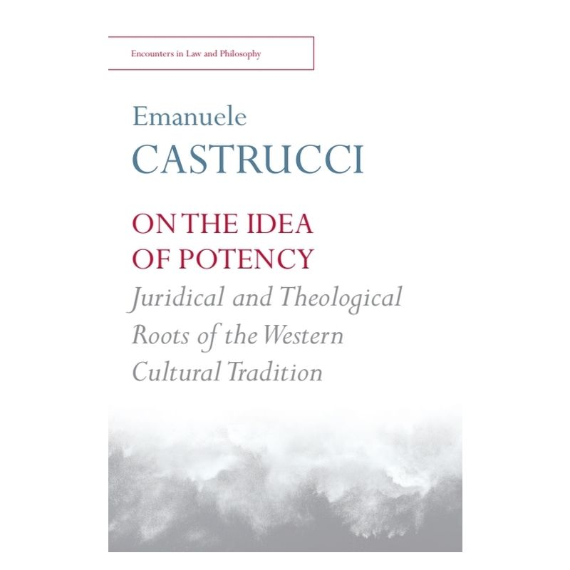
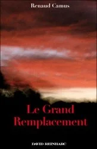

32:49 · 3 OPERE
Il caso Castrucci dell'università di Siena.
Il filo del discorso
Nel dicembre 2019, il caso dei messaggi filo-nazisti di Emanuele Castrucci offre a Dr Divago lo spunto per discutere responsabilità dell’insegnamento, libertà di espressione e uso pubblico della storia. Il relatore contesta la difesa fondata sul giudizio storico personale e distingue la revisione documentata di una ricostruzione dall’assoluzione ideologica di un regime criminale. Il paragone con eventuali opere utili del fascismo chiarisce il suo argomento: un beneficio particolare non cancella persecuzioni e responsabilità. La discussione passa a On the Idea of Potency, di cui viene criticata una parte, e a Le Grand Remplacement di Renaud Camus, respingendo le spiegazioni che imputano le strutture del potere a un intero popolo. Il bersaglio si estende poi ai meccanismi di selezione accademica, alla burocratizzazione e a una formazione che il relatore giudica incapace di stimolare il pensiero autonomo. Il giuramento universitario del 1931 e gli esempi di Spinoza, Croce e Wittgenstein servono da confronto storico. Nel finale, una contestazione del modo in cui Castrucci tratta identità e tautologia si intreccia alla richiesta di un’università concentrata sui libri e sugli studiosi. La scheda conserva la critica del relatore senza trasformarla in una diagnosi personale, in un accertamento giudiziario o in una condanna indistinta di ogni docente e istituzione.
I libri nel discorso

On the Idea of Potency. Juridical and Theological Roots of the Western Cultural Tradition
Copertina: Edinburgh University Press, Encounters in Law and Philosophy, luglio 2016, 200 pagine secondo l’editore; descrizione catalografica xi, 187 pagine. Paperback ISBN 9781474411851; hardback ISBN 9781474411844. Copertina ufficiale bianca con autore azzurro, titolo rosso e immagine grigia. ISBN e copyright 2016 sono confermati nel colophon dell’estratto.
Immagine autentica dell’opera, controllata visivamente; l’edizione di riferimento non è attribuita al filmato.
On the Idea of Potency, titolo completo inglese e traduzione italiana pronunciati; segue una critica di un passo.
Passaggio 10:15 ↗ · Fonti e libro ↗
Le Grand Remplacement
Copertina: D. Reinharc, Neuilly-sur-Seine, 2011, 113 pagine, ISBN 9782358690317; data commerciale 9 novembre 2011. Raccolta di tre allocuzioni del 2010–2011 e un’intervista del 2011, secondo BnF. Copertina con cielo rosso, titolo rosso e autore in alto. Non una ristampa ampliata successiva.
Copertina intera autenticata mediante titolo, autore, editore e ISBN della scheda libraria; metadati confrontati con BnF. Non si riprende l’errata data 2011 per la conferenza di Lunel del novembre 2010 presente in alcune descrizioni commerciali.
Renaud Camus e Le Grand Remplacement, autore e titolo espliciti.
Passaggio 13:09 ↗ · Fonti e libro ↗
Tractatus logico-philosophicus
Copertina del volume che comprende il Tractatus: Einaudi · Tractatus logico-philosophicus e Quaderni 1914–1916 · 2009
Copertina del volume Einaudi che comprende sia il Tractatus sia i Quaderni 1914–1916. La voce identifica il Tractatus; l’ISBN appartiene al volume contenitore e l’edizione non è accertata nel filmato.
Il Tractatus, esplicitamente citato come testo presentato da Wittgenstein per il dottorato a Cambridge.
Passaggio 31:27 ↗ · Fonti e libro ↗